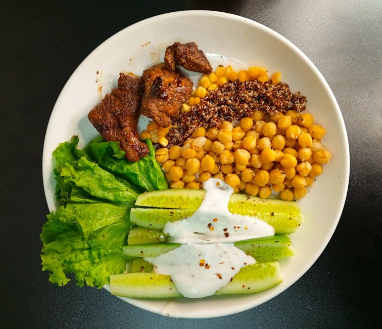

← Back to all nutrition guides
Healthy Takeout Meals For Weight Loss
A realistic guide for busy professionals over 40.
Eating healthy doesn’t have to mean giving up on the convenience of takeout meals, especially for men aged 40–65 looking to lose weight. The shift towards healthier eating habits without the hassle of calorie counting can be easily achieved by choosing the right takeout options. Thankfully, many restaurants are now offering nutritious choices that are not only satisfying but also promote weight loss. This article explores how you can enjoy tasty takeout while sticking to your health goals, making it simpler to eat better without sacrificing flavor or convenience.
Want a personalized version of this strategy?
Try the AI Food Coach
Why Healthy Takeout Meals For Weight Loss Matters
For men in the 40–65 age bracket, maintaining a healthy weight is crucial for overall well-being. As metabolism slows with age, choosing the right foods becomes increasingly important. Adopting healthier takeout meals can help in managing weight while ensuring that nutritional needs are met. When eating out, it’s easy to be tempted by high-calorie options, but knowing how to select lighter yet fulfilling meals can lead to significant health improvements. Eating well can improve energy levels, support heart health, and contribute to long-term weight loss. Additionally, the convenience of takeout means you don’t have to spend hours in the kitchen, making it easier to stick to healthier habits. These meals should not only be tasty but should also provide the vitamins and minerals necessary for robust health. Focusing on nutritious takeout prevents feelings of deprivation and keeps you on track towards your weight loss goals.
Simple Strategy
- Choose grilled or roasted options instead of fried items.
- Opt for meals that include plenty of vegetables.
- Favor whole grains like brown rice or quinoa over refined carbs.
These strategies work best when personalized to your lifestyle and goals.
Build Your Personalized Nutrition Plan
Most people know what foods are healthy. The hard part is knowing what to eat today. Today's Food Coach creates a simple, personalized daily plan based on your goals and lifestyle.
Start Your PlanExample Day of Eating
Start your day with a hearty vegetable omelet from a local café, packed with nutrients to fuel your morning. For lunch, consider ordering a large salad topped with grilled chicken or fish, which offers protein and fiber to keep you satisfied. As for dinner, a lean protein stir-fry with an assortment of colorful vegetables can be a delicious and healthy choice when getting takeout.
Common Mistakes
- Forgetting to check the menu for hidden fats and sugars.
- Choosing large portion sizes that lead to excess calorie intake.
- Overlooking the importance of balanced meals with protein and veggies.
Practical Tips
- Look for restaurants that focus on fresh and organic ingredients.
- Ask for dressings and sauces on the side to control how much you use.
- Try to avoid bread baskets and heavy appetizers to keep meals lighter.
Frequently Asked Questions
What should I avoid when ordering takeout?
Avoid fried foods, creamy sauces, and excessive carbs, as they can increase calorie counts without providing nutrients.
How do I ensure my takeout is healthy?
Focus on meals with lean proteins, plenty of vegetables, and healthy fats while avoiding sugary drinks.
Can I lose weight while enjoying takeout?
Yes, by making informed choices and opting for healthy menu options, you can lose weight without sacrificing the convenience of takeout.
Related Nutrition Guides
- How To Break The Habit Of Night Eating
- Simple Weight Loss Strategies For Men Over 45
- Best Eating Habits For Men Over 40
Try Today's Food Coach
Generate a personalized meal strategy based on your lifestyle and goals.
Try the AI Food Coach